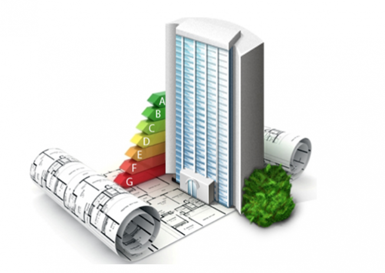
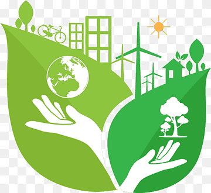

Vision a futuro
El area de Green Tech se espera que siga continuando, esperimentando un cresimiento significativo en los proximos años debido al exponencial crecimiento de crear conciencia sobre un cambio climatico y la nesesidad de encontrar soluciones sostenibles para abordar los desafios ambientales
Algunos de los futuroa avances y desarrollos esperados en el campo de Green Tech, A continuacion se muestra una tabla con los mas importantes:
| Nombre | que es? | que se espera o futuros avances | Ejemplos | ||||||||||
|---|---|---|---|---|---|---|---|---|---|---|---|---|---|
| Energia renovables avanzadas |
|
|
 |
||||||||||
| Almacen de energias |
Es un dispositivo capaz de almacenar grandes cantidades de energia electrica en forma de cargas electrostaticas por lo que no hay reacciones quimicas. |
uno de los mayores retos an sido para la integración exitosa de energías renovables en la red eléctrica es el almacenamiento de energía. Se espera que se produzcan avances significativos en tecnologías de almacenamiento de energía, como baterías de ion-litio, almacenamiento térmico y sistemas de almacenamiento de energía a gran escala. |
 |
||||||||||
| Movilidad sostenible |
En globa un conjunto de prosesos y acciones orientados a conseguir el uso racional de los medios de transporte tanto particulares como publicos. El objetivo ultimo es cubrir las necesidades de transporte con el minimo impacto ambiental. |
Lo que buscara la industria automotriz continuará avanzando en la adopción de vehículos eléctricos y tecnologías de propulsión alternativas, como el hidrógeno y los biocombustibles. Además, se espera un mayor desarrollo de la infraestructura de carga para vehículos eléctricos y soluciones de transporte público más ecológicas. |
 |
||||||||||
| Eficiencia energetica en edificios |
Lo podemos difinir como la eficiencia energetica en edificios como la utilizacion racional de energia para abastecer las nesecidades energeticas de climatizacion de un inmueble(calefaccion y refrigeracion). |
Los avances de la tecnologías que mejoran la eficiencia energética en edificios, como sistemas de climatización inteligentes, iluminación LED y materiales de construcción sostenibles, seguirán siendo áreas de enfoque para reducir el consumo de energía en el sector de la construcción. |
 | ||||||||||
| Agricultura y alimentacion sostenible |
Estas son aquellas que generan un impacto ambiental reducido y que contribuye a la seguridad alimentaria y nutricional y que a las generaciones actuales y futuras lleven una vida saludable |
El Green Tech se aplicará cada vez más en la agricultura y la producción de alimentos para reducir el uso de productos químicos, mejorar la eficiencia del agua, reducir las emisiones de gases de efecto invernadero y promover prácticas agrícolas más sostenibles. |
 |
||||||||||
| Gestion de residuos y reciclaje |
La gestion de residuos trata de toda una serie de actividades que incluyen la recogida, el transporte, el reciclaje, la utilizacion y la reutilizacion de los residuos y el control de todos los prosesos. |
Se esperan avances en tecnologías de gestión de residuos y reciclaje para hacer frente a la creciente cantidad de desechos generados por la sociedad moderna. Esto incluye tecnologías para la conversión de residuos en energía, procesos de reciclaje más eficientes y soluciones innovadoras para reducir la contaminación plástica. |
 |
||||||||||
| Integracion de la tecnologia y la naturaleza |
La integracion de la tecnologia ocurre cuando la herramientas tecnologicas ayudan a profundizar y mejorar el proceso de aprendizaje en todas las asignaturas en este caso con la naturaleza. |
La biomimética y el diseño inspirado en la naturaleza serán áreas de enfoque para el desarrollo de tecnologías más sostenibles y respetuosas con el medio ambiente. Se espera que la integración de la tecnología y la naturaleza conduzca a soluciones innovadoras en áreas como la arquitectura, la ingeniería y el diseño de productos. |
 | ||||||||||
Un mapa de imagen con estadisticas de mexico de energias renovables en pandemia de Green tech

Un mapa de imagen con estadisticas de latino America de Green tech